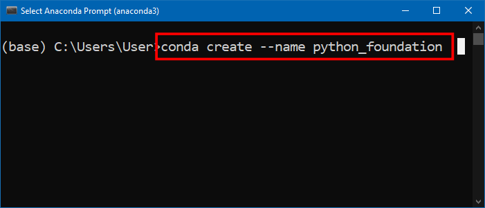
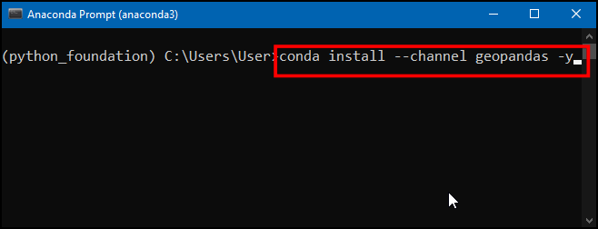
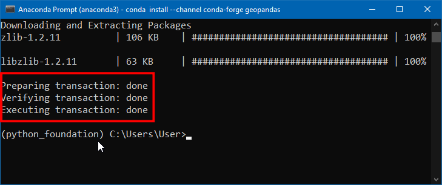
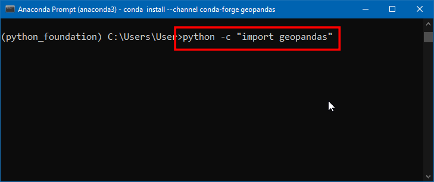
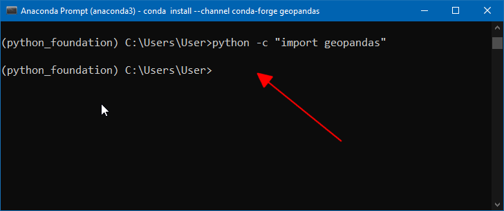
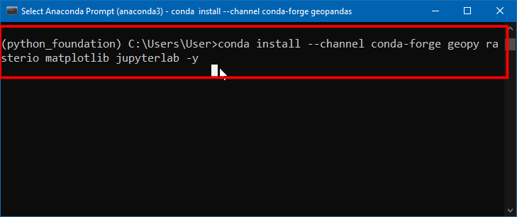
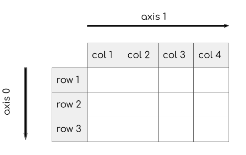

Python Foundation for Spatial Analysis (Full Course Material)
A gentle introduction to Python programming with a focus on spatial data.
Ujaval Gandhi
- Introduction
- Get the Data Package
- Get the Course Videos
- Installation and Setting up the Environment
- Using Jupyter Notebooks
- Variables
- Data Structures
- String Operations
- Loops and Conditionals
- Functions
- The Python Standard Library
- Third-party Modules
- Using Web APIs
- Assignment
- Review of Common Python Errors
- Reading Files
- Reading CSV Files
- Working with Pandas
- Working with Geopandas
- Creating Spatial Data
- Introduction to NumPy
- Working with RasterIO
- Writing Standalone Python Scripts
- What next?
- Data Credits
- License

Introduction
This class covers Python from the very basics. Suitable for GIS practitioners with no programming background or python knowledge. The course will introduce participants to basic programming concepts, libraries for spatial analysis, geospatial APIs and techniques for building spatial data processing pipelines.

Get the Data Package
The code examples in this class use a variety of datasets. All the
required datasets and Jupyter notebooks are supplied to you in the
python_foundation.zip file. Unzip this file to a directory
- preferably to the
<home folder>/Downloads/python_foundation/
folder.
Download python_foundation.zip.
Note: Certification and Support are only available for participants in our paid instructor-led classes.
Get the Course Videos
The course is accompanied by a set of videos covering the all the modules. These videos are recorded from our live instructor-led classes and are edited to make them easier to consume for self-study. We have 2 versions of the videos:
YouTube
We have created a YouTube Playlist with separate videos for each notebook and exercise to enable effective online-learning. Access the YouTube Playlist ↗
Vimeo
We are also making combined full-length video for each module available on Vimeo. These videos can be downloaded for offline learning. Access the Vimeo Playlist ↗
Installation and Setting up the Environment
There are many ways to install Python on your system. Many operating systems comes with a Python distribution built-in too. If you use software such as QGIS - it comes with its own version of Python. Working on Python projects typically require installing third-party packages (i.e. tools). As these packages have different dependencies - they often cause conflicts and errors due to different versions of Python on your system.
An easy and reliable way to get a Python installation on your system is via Anaconda. For this course, we will use the Anaconda3 Individual Edition to install Python and required spatial analysis packages.
Many Python tool names have references to the reptile world. The default Python package manager is called Pip which references the process of hatching eggs. Interestingly, the naming of the Python language itself had nothing to do with reptiles.
Anaconda provides the conda command that can be run from
the Command Prompt on Windows or the Terminal on
Mac/Linux. This is the preferred method to install the required
packages.
- Download the Anaconda Installer for Python 3.8 (or a higher version) for your operating system. Once downloaded, double click the installer and install it into the default suggested directory. Select an install for Just Me and use default settings.
Note: If your username has spaces, or non-English characters, it causes problems. In that case, you can install it to a path such as
C:\anaconda.

- (Windows users) Once installed, search for Anaconda Prompt launch it. (Mac/Linux users): Launch a Terminal window.

- It is a good practice to create a new environment for each of your Python projects. An environment is a space where you will install required packages. Many packages may contain conflicting requirements, preventing them from all being installed into a single environment. Having a separate environment isolates your project from such problems. We will now type commands in a terminal to create a new environment. (Windows users) Search for Anaconda Prompt in the Start Menu and launch it. (Mac/Linux users): Open a Terminal window. Enter the command below and press Enter to create your new environment.
conda create --name python_foundation
- Now you will be asked for confirmation; press y + Enter to proceed and complete your environment creation.

- Now that the environment is created, you need to activate it. Type
the command below and press Enter. Once the environment
activates, the
(base)will change to(python_foundation).
conda activate python_foundation
- Now we are ready to install the required packages using the
conda installcommand. First we will installgeopandas. This is a module that allows you to work with vector geospatial data in Python. We will use theconda-forgechannel to install the package. The-yoption will skip the confirmation dialog. Enter the command below and press Enter.
conda install --channel conda-forge geopandas -yLearn more about conda-forge

- If the installation is successful, you should see a message as shown here.

geopandasinstallation is a bit tricky and can sometimes fail. So it is a good idea to check if it can be imported without errors. We will use thepythoncommand with the-coption which will execute a python statement. Enter the below command and press Enter.
python -c "import geopandas"
- If your geopandas installation was successful, the command will run without any output. If nothing happens - it means your installation was successful!. If you see any errors, please follow the debugging guide.

- We can now install other required packages for this class. Run the
command below to install
geopy,rasterio,matplotlibandjupyterlabpackages.
conda install --channel conda-forge geopy rasterio matplotlib jupyterlab -y
- Once the command finishes, you should see a screen such as below.

- Your Python environment is now ready. Launch the JupyterLab application using the command below. This will initiate and run a local server in your system and opens in your default browser.
Note: Do not close your anaconda prompt after JupyterLab opens up. You need to keep it running as long as you want to use JupyterLab.
jupyter-lab
Note that JupyterLab application can browse the files only on the Drive from where it was launched from. If your data is stored on a different drive, you will need an additional step to switch to that drive before launching Jupyterlab.
Windows
On the command prompt, type the drive letter followed by
: and press Enter to switch to the drive.
D:jupyter-lab
Mac/Linux
Check the drives mounted on your system by entering
ls /Volumes. After that use cd command to
switch to the drive.
cd /Volumes/<NameofYourDrive>jupyter-lab- A new browser tab will open with an instance of JupyterLab. Click the Python 3 button under Notebook.

- Enter the following statements in the first cell and click the Run button. If nothing happens - it means your installation was successful!. Your environment is now ready for the course. If you get an ImportError, repeat the installation steps carefully again.
import geopandas
import geopy
import rasterio
Debugging Python Installation Errors
The following section describes common installation errors with suggested fixes.
OpenSSL Error
On many Windows systems, you may get an error such CondaSSLError: OpenSSL appears to be unavailable on this machine. OpenSSL is required to download and install packages. This means the OpenSSL module is missing. Please download and install the Win32/Win64 OpenSSL packages and try again.
If the error persists, you can manually fix the issue by copying the required DLL files in the correct place as described in this issue.
RTree spatialindex Error
When importing GeoPandas, you may see an error Could not find or load spatialindex_c-64.dll. This error is likely caused by a corrupted installation. This error is easily fixed by deleting the conda environment and reinstalling geopandas. Run the following sequence of commands to delete the environment.
conda deactivate
conda env remove -n python_foundationFollow the installation steps and reinstall geopandas.
Using Jupyter Notebooks

Your class data package contain multiple Jupyter notebooks containing code and exercises for this class.
- Launch the JupyterLab application. It will open your Web Browser and load the application in a new tab. From the left-hand panel, navigate to the directory where you extracted the data package.

- Jupyter notebooks have a
.ipynbextensions. Double-click on a notebook file to open it. Code in the notebook is executed cell-by-cell. You can select a cell and click the Run button to execute the code and see the output.

- At the end of each notebook, you will find an exercise. Before adding a new cell and attempting to complete the exercise, make sure you go to Run → Run All Cells to execute all the code in the notebook. Doing this will ensure all the required variables are avalable to you to use in the exervise.

Open the notebook named 01_variables.ipynb.

Variables
Strings
A string is a sequence of letters, numbers, and punctuation marks - or commonly known as text
In Python you can create a string by typing letters between single or double quotation marks.
Numbers
Python can handle several types of numbers, but the two most common are:
- int, which represents integer values like 100, and
- float, which represents numbers that have a fraction part, like 0.5
Exercise
We have a variable named distance_km below with the
value 4135 - indicating the straight-line distance between
San Francisco and New York in Kilometers. Create another variable called
distance_mi and store the distance value in miles.
- Hint1: 1 mile = 1.60934 kilometers
Add the code in the cell below and run it. The output should be 2569.37
Open the notebook named 02_data_structures.ipynb.

Data Structures
Tuples
A tuple is a sequence of objects. It can have any number of objects inside. In Python tuples are written with round brackets ().
You can access each item by its position, i.e. index. In programming, the counting starts from 0. So the first item has an index of 0, the second item an index of 1 and so now. The index has to be put inside square brackets [].
Lists
A list is similar to a tuple - but with a key difference. With tuples, once created, they cannot be changed, i.e. they are immutable. But lists are mutable. You can add, delete or change elements within a list. In Python, lists are written with square brackets []
You can access the elements from a list using index the same way as tuples.
You can call len() function with any Python object and
it will calculates the size of the object.
We can add items to the list using the append()
method
As lists are mutable, you will see that the size of the list has now changed
Another useful method for lists is sort() - which can
sort the elements in a list.
The default sorting is in ascending order. If we wanted to
sort the list in a decending order, we can call the function
with reverse=True
Sets
Sets are like lists, but with some interesting properties. Mainly that they contain only unique values. It also allows for set operations - such as intersection, union and difference. In practice, the sets are typically created from lists.
capitals = ['Sacramento', 'Boston', 'Austin', 'Atlanta']
capitals_set = set(capitals)
cities_set = set(cities)
capital_cities = capitals_set.intersection(cities_set)
print(capital_cities)Sets are also useful in finding unique elements in a list. Let’s
merge the two lists using the extend() method. The
resulting list will have duplicate elements. Creating a set from the
list removes the duplicate elements.
Dictionaries
In Python dictionaries are written with curly brackets {}. Dictionaries have keys and values. With lists, we can access each element by its index. But a dictionary makes it easy to access the element by name. Keys and values are separated by a colon :.
data = {'city': 'San Francisco', 'population': 881549, 'coordinates': (-122.4194, 37.7749) }
print(data)You can access an item of a dictionary by referring to its key name, inside square brackets.
Exercise
From the dictionary below, how do you access the latitude and longitude values? print the latitude and longitude of new york city by extracting it from the dictionary below.
The expected output should look like below.
40.661
-73.944Open the notebook named 03_string_operations.ipynb.

String Operations
Escaping characters
Certain characters are special since they are by Python language itself. For example, the quote character ’ is used to define a string. What do you do if your string contains a quote character?
In Python strings, the backslash \ is a special character, also called the escape character. Prefixing any character with a backslash makes it an ordinary character. (Hint: Prefixing a backslash with a backshalsh makes it ordinary too!)
It is also used for representing certain whitespace characters, \n is a newline, \t is a tab etc.
Remove the # from the cell below and run it.
We can fix the error by espacing the single quote within the string.
Alternatively, you can also use double-quotes if your string contains a single-quote.
What if our string contains both single and double quotes?
We can use triple-quotes! Enclosing the string in triple quotes ensures both single and double quotes are treated correctly.
latitude = '''37° 46' 26.2992" N'''
longitude = '''122° 25' 52.6692" W'''
print(latitude, longitude)Backslashes pose another problem when dealing with Windows paths
Prefixing a string with r makes is a Raw string. Which doesn’t interpret backslash as a special character
Printing Strings
Python provides a few different ways to create strings from variables. Let’s learn about the two preferred methods.
String format() Method
We can use the string format() method to create a string
with curly-braces and specify the values to fill in each field.
city = 'San Francisco'
population = 881549
output = 'Population of {} is {}.'.format(city, population)
print(output)You can also use the format method to control the precision of the numbers
F-Strings
Since Python 3.6, we have an improved way for string formatting
called f-strings - which stands for formatted string
literals. It works similarly to the format() function
but provides a more concise syntax. We create an f-string by adding a
prefix f to any string. The variables within curly-braces
inside a f-string are replaced with their values.
city = 'San Francisco'
population = 881549
output = f'Population of {city} is {population}.'
print(output)The same formatting operators we saw earlier works with f-strings.
latitude = 37.7749
longitude = -122.4194
coordinates = f'{latitude:.2f},{longitude:.2f}'
print(coordinates)We find that while f-strings are modern and concise - beginners find
it more intuitive to use the format() method, so we will
prefer format() over f-strings in this course. But you are
free to use any method of your choice.
Exercise
Use the string slicing to extract and print the degrees, minutes and second parts of the string below. The output should be as follows
37
46
26.2992Open the notebook named
04_loops_and_conditionals.ipynb.

Loops and Conditionals
For Loops
A for loop is used for iterating over a sequence. The sequence can be a list, a tuple, a dictionary, a set, or a string.
To iterate over a dictionary, you can call the items()
method on it which returns a tuple of key and value for each item.
data = {'city': 'San Francisco', 'population': 881549, 'coordinates': (-122.4194, 37.7749) }
for x, y in data.items():
print(x, y)The built-in range() function allows you to create
sequence of numbers that you can iterate over
The range function can also take a start and an end number
Conditionals
Python supports logical conditions such as equals, not equals, greater than etc. These conditions can be used in several ways, most commonly in if statements and loops.
An if statement is written by using the if
keyword.
Note: A very common error that programmers make is to use = to evaluate a equals to condition. The = in Python means assignment, not equals to. Always ensure that you use the == for an equals to condition.
You can use else keywords along with if to
match elements that do not meet the condition
Python relies on indentation (whitespace at the beginning of a line) to define scope in the for loop and if statements. So make sure your code is properly indented.
You can evaluate a series of conditions using the elif
keyword.
Multiple criteria can be combined using the and and
or keywords.
cities_population = {
'San Francisco': 881549,
'Los Angeles': 3792621,
'New York': 8175133,
'Atlanta':498044
}
for city, population in cities_population.items():
if population < 1000000:
print('{} is a small city'.format(city))
elif population > 1000000 and population < 5000000:
print('{} is a big city'.format(city))
else:
print('{} is a mega city'.format(city))Control Statements
A for-loop iterates over each item in the sequence. Sometimes is
desirable to stop the execution, or skip certain parts of the for-loops.
Python has special statements, break, continue
and pass.
A break statement will stop the loop and exit out of
it
A continue statement will skip the remaining part of the
loop and go to the next iteration
A pass statement doesn’t do anything. It is useful when
some code is required to complete the syntax, but you do not want any
code to execute. It is typically used as a placeholder when a function
is not complete.
Exercise
The Fizz Buzz challenge.
Write a program that prints the numbers from 1 to 100 and for multiples of 3 print Fizz instead of the number and for the multiples of 5 print Buzz. If it is divisible by both, print FizzBuzz.
So the output should be something like below
1, 2, Fizz, 4, Buzz, Fizz ... 13, 14, FizzBuzz, ...
Breaking down the problem further, we need to create for-loop with following conditions
- If the number is a multiple of both 3 and 5 (i.e. 15), print FizzBuzz
- If the number is multiple of 3, print Fizz
- If the number is multiple of 5, print Buzz
- Otherwise print the number
Hint: See the code cell below. Use the modulus operator
% to check if a number is divisible by another.
10 % 5 equals 0, meaning it is divisible by 5.
for x in range(1, 10):
if x%2 == 0:
print('{} is divisible by 2'.format(x))
else:
print('{} is not divisible by 2'.format(x))Open the notebook named 05_functions.ipynb.

Functions
A function is a block of code that takes one or more inputs, does some processing on them and returns one or more outputs. The code within the function runs only when it is called.
A funtion is defined using the def keyword
def my_function():
....
....
return somethingFunctions are useful because they allow us to capture the logic of our code and we can run it with differnt inputs without having to write the same code again and again.
Functions can take multiple arguments. Let’s write a function to convert coordinates from degrees, minutes, seconds to decimal degrees. This conversion is needed quite often when working with data collected from GPS devices.
- 1 degree is equal to 60 minutes
- 1 minute is equal to 60 seconds (3600 seconds)
To calculate decimal degrees, we can use the formula below:
If degrees are positive:
Decimal Degrees = degrees + (minutes/60) + (seconds/3600)
If degrees are negative
Decimal Degrees = degrees - (minutes/60) - (seconds/3600)
def dms_to_decimal(degrees, minutes, seconds):
if degrees < 0:
result = degrees - minutes/60 - seconds/3600
else:
result = degrees + minutes/60 + seconds/3600
return resultExercise
Given a coordinate string with value in degree, minutes and seconds,
convert it to decimal degrees by calling the dms_to_decimal
function.
def dms_to_decimal(degrees, minutes, seconds):
if degrees < 0:
result = degrees - minutes/60 - seconds/3600
else:
result = degrees + minutes/60 + seconds/3600
return result
coordinate = '''37° 46' 26.2992"'''
# Add the code below to extract the parts from the coordinate string,
# call the function to convert to decimal degrees and print the result
# The expected answer is 37.773972# Hint: Converting strings to numbers
# When you extract the parts from the coordinate string, they are strings
# You will need to use the built-in int() / float() functions to
# convert them to numbers
x = '25'
print(x, type(x))
y = int(x)
print(y, type(y))Challenge: Once you are done with the exercise, you can
attempt this challenge. Can you implement a function
decimal_to_dms() which does the reverse operation?
i.e. convert decimal degrees to degrees,minutes and seconds?
Open the notebook named 06_standard_library.ipynb.

The Python Standard Library
Python comes with many built-in modules that offer ready-to-use
solutions to common programming problems. To use these modules, you must
use the import keyword. Once imported in your Python
script, you can use the functions provided by the module in your
script.
We will use the built-in math module that allows us to
use advanced mathematical functions.
You can also import specific functions or constants from the module like below
Calculating Distance
Given 2 points with their Latitude and Longitude coordinates, the Haversine Formula calculates the straight-line distance in meters, assuming that Earth is a sphere.
The formula is simple enough to be implemented in a spreadsheet too. If you are curious, see my post about using this formula for calculating distances in a spreadsheet.
We can write a function that accepts a pair of origin and destination coordinates and computes the distance.
def haversine_distance(origin, destination):
lat1, lon1 = origin
lat2, lon2 = destination
radius = 6371000
dlat = math.radians(lat2-lat1)
dlon = math.radians(lon2-lon1)
a = math.sin(dlat/2) * math.sin(dlat/2) + math.cos(math.radians(lat1)) \
* math.cos(math.radians(lat2)) * math.sin(dlon/2) * math.sin(dlon/2)
c = 2 * math.atan2(math.sqrt(a), math.sqrt(1-a))
distance = radius * c
return distanceDiscover Python Easter Eggs
Programmers love to hide secret jokes in their programs for gun.
These are known as Easter Eggs. Python has an easter egg that
you can see when you try to import the module named this.
Try writing the command import this below.
Let’s try one more. Try importing the antigravity
module.
Here’s a complete list of easter eggs in Python.
Exercise
Find the coordinates of 2 cities near you and calculate the distance
between them by calling the haversine_distance function
below.
import math
def haversine_distance(origin, destination):
lat1, lon1 = origin
lat2, lon2 = destination
radius = 6371000
dlat = math.radians(lat2-lat1)
dlon = math.radians(lon2-lon1)
a = math.sin(dlat/2) * math.sin(dlat/2) + math.cos(math.radians(lat1)) \
* math.cos(math.radians(lat2)) * math.sin(dlon/2) * math.sin(dlon/2)
c = 2 * math.atan2(math.sqrt(a), math.sqrt(1-a))
distance = radius * c
return distance
# city1 = (lat1, lng1)
# city2 = (lat2, lng2)
# call the function and print the resultOpen the notebook named
07_third_party_modules.ipynb.

Third-party Modules
Python has a thriving ecosystem of third-party modules (i.e. libraries or packages) available for you to install. There are hundreds of thousands of such modules available for you to install and use.
Installing third-party libraries
Python comes with a package manager called pip. It can
install all the packages listed at PyPI
(Python Package Index). To install a package using pip, you need to
run a command like following in a Terminal or CMD prompt.
pip install <package name>
For this course, we are using Anancoda platform - which comes with
its own package manager called conda. You can use Anaconda
Navigator to search and install packages. Or run the command like
following in a Terminal or CMD Prompt.
conda install <package name>
See this comparison of pip and conda to understand the differences.
You may also use Mamba as an alternate open-source package manager that is fully compatible with conda.
Calculating Distance
We have already installed the geopy package in our
environment. geopy comes with functions that have already
implemented many distance calculation formulae.
distance.great_circle(): Calculates the distance on a great circle using haversine formuladistance.geodesic(): Calculates the distance using a chosen ellipsoid using vincenty’s formula
Exercise
Repeat the distance calculation exercise from the previous module but perform the calculation using the geopy library.
from geopy import distance
# city1 = (lat1, lng1)
# city2 = (lat2, lng2)
# call the geopy distance function and print the great circle and ellipsoid distanceOpen the notebook named 08_using_web_apis.ipynb.

Using Web APIs
An API, or Application Program Interface, allows one program to talk to another program. Many websites or services provide an API so you can query for information in an automated way.
For mapping and spatial analysis, being able to use APIs is critical. For the longest time, Google Maps API was the most popular API on the web. APIs allow you to query web servers and get results without downloading data or running computation on your machine.
Common use cases for using APIs for spatial analysis are
- Getting directions / routing
- Route optimization
- Geocoding
- Downloading data
- Getting real-time weather data
- …
The provide of such APIs have many ways to implement an API. There are standards such as REST, SOAP, GraphQL etc. REST is the most populat standard for web APIs, and for geospatial APIs. REST APIs are used over HTTP and thus called web APIs.
Understanding JSON and GeoJSON
JSON stands for JavaScript Object Notation. It is a format for storing and transporting data, and is the de-facto standard for data exchanged by APIs. GeoJSON is an extension of the JSON format that is commonly used to represent spatial data.
Python has a built-in json module that has methods for
reading json data and converting it to Python objects, and vice-versa.
In this example, we are using the requests module for
querying the API which conveniently does the conversion for us. But it
is useful to learn the basics of working with JSON in Python.
The GeoJSON data contains features, where each feature has some properties and a geometry.
geojson_string = '''
{
"type": "FeatureCollection",
"features": [
{"type": "Feature",
"properties": {"name": "San Francisco"},
"geometry": {"type": "Point", "coordinates": [-121.5687, 37.7739]}
}
]
}
'''
print(geojson_string)To convert a JSON string to a Python object (i.e. parsing JSON), we
can use the json.loads() method.
Now that we have parsed the GeoJSON string and have a Python object, we can extract infromation from it. The data is stored in a FeatureCollection - which is a list of features. In our example, we have just 1 feature inside the feature collection, so we can access it by using index 0.
The feature representation is a dictionary, and individual items can be accesses using the keys
The requests module
To query a server, we send a GET request with some
parameters and the server sends a response back. The
requests module allows you to send HTTP requests and parse
the responses using Python.
The response contains the data received from the server. It contains the HTTP status_code which tells us if the request was successful. HTTP code 200 stands for Sucess OK.
Calculating Distance using OpenRouteService API

OpenRouteService (ORS) provides a free API for routing, distance matrix, geocoding, route optimization etc. using OpenStreetMap data. We will learn how to use this API through Python and get real-world distance between cities.
Almost all APIs require you to sign-up and obtain a key. The key is used to identify you and enforce usage limits so that you do not overwhelm the servers. We will obtain a key from OpenRouteServie so we can use their API
Visit OpenRouteService
Sign-up page and create an account. Once your account is activated,
visit your Dashboard and request a token. Select Standard as
the Token type and enter python_foundation as the Token
name. Click CREATE TOKEN. Once created, copy the long string
displayed under Key and enter below.
We will use the OpenRouteServices’s Directions Service. This service returns the driving, biking or walking directions between the given origin and destination points.
import requests
san_francisco = (37.7749, -122.4194)
new_york = (40.661, -73.944)
parameters = {
'api_key': ORS_API_KEY,
'start' : '{},{}'.format(san_francisco[1], san_francisco[0]),
'end' : '{},{}'.format(new_york[1], new_york[0])
}
response = requests.get(
'https://api.openrouteservice.org/v2/directions/driving-car', params=parameters)
if response.status_code == 200:
print('Request successful.')
data = response.json()
else:
print('Request failed.')We can read the response in JSON format by calling
json() method on it.
The response is a GeoJSON object representing the driving direction
between the 2 points. The object is a feature collection with just 1
feature. We can access it using the index 0. The
feature’s property contains summary information which has
the data we need.
We can extract the distance and convert it to
kilometers.
You can compare this distance to the straight-line distance and see the difference.
Exercise 1
Replace the ORS_API_KEY with your own key in the code
below. Change the cities with your chosen cities and run the cell to see
the summary of driving directions. Extract the values for
distance (meters) and duration (seconds).
Convert and print the driving distance in km and driving time in
minutes.
import requests
ORS_API_KEY = 'replace this with your key'
san_francisco = (37.7749, -122.4194)
new_york = (40.661, -73.944)
parameters = {
'api_key': ORS_API_KEY,
'start' : '{},{}'.format(san_francisco[1], san_francisco[0]),
'end' : '{},{}'.format(new_york[1], new_york[0])
}
response = requests.get(
'https://api.openrouteservice.org/v2/directions/driving-car', params=parameters)
if response.status_code == 200:
print('Request successful.')
data = response.json()
else:
print('Request failed.')
data = response.json()
summary = data['features'][0]['properties']['summary']
print(summary)API Rate Limiting
Many web APIs enforce rate limiting - allowing a limited number of requests over time. With computers it is easy to write a for loop, or have multiple programs send hundrends or thousands of queries per second. The server may not be configured to handle such volume. So the providers specify the limits on how many and how fast the queries can be sent.
OpenRouteService lists several API Restrictions. The free plan allows for upto 40 direction requests/minute.
There are many libraries available to implement various strategies
for rate limiting. But we can use the built-in time module
to implement a very simple rate limiting method.
Exercise 2
Below cell contains a dictionary with 3 destination cities and their
coordinates. Write a for loop to iterate over the
destination_cities dictionary and call
get_driving_distance() function to print real driving
distance between San Fransico and each city. Rate limit your queries by
adding time.sleep(2) between successive function calls.
Make sure to replace the ORS_API_KEY value with your own
key.
import requests
import time
ORS_API_KEY = 'replace this with your key'
def get_driving_distance(source_coordinates, dest_coordinates):
parameters = {
'api_key': ORS_API_KEY,
'start' : '{},{}'.format(source_coordinates[1], source_coordinates[0]),
'end' : '{},{}'.format(dest_coordinates[1], dest_coordinates[0])
}
response = requests.get(
'https://api.openrouteservice.org/v2/directions/driving-car', params=parameters)
if response.status_code == 200:
data = response.json()
summary = data['features'][0]['properties']['summary']
distance = summary['distance']
return distance/1000
else:
print('Request failed.')
return -9999
san_francisco = (37.7749, -122.4194)
destination_cities = {
'Los Angeles': (34.0522, -118.2437),
'Boston': (42.3601, -71.0589),
'Atlanta': (33.7490, -84.3880)
}Open the notebook named assignment.ipynb.

Assignment
Your assignment is to geocode the addresses given below using GeoPy. This assignment is designed to help you practice your coding skills learnt in the course so far.
Part 1
You have been given a list containing 5 tuples of place names along with their address. You need to use the Nominatim geocoder and obtain the latitude and longitude of each address.
# List of Hurricane Evacuation Centers in New York City with Addresses
# Each item is a tuple with the name of the center and its address
locations = [
('Norman Thomas HS (ECF)', '111 E 33rd St, NYC, New York'),
('Midtown East Campus', '233 E 56th St, NYC, New York'),
('Louis D. Brandeis HS', '145 W 84th St, NYC, New York'),
('Martin Luther King, Jr. HS', '122 Amsterdam Avenue, NYC, New York'),
('P.S. 48', '4360 Broadway, NYC, New York')
]The expected output should be as follows
[('Norman Thomas HS (ECF)', 40.7462177, -73.9809816),
('Midtown East Campus', 40.65132465, -73.92421646290632),
('Louis D. Brandeis HS', 40.7857432, -73.9742029),
('Martin Luther King, Jr. HS', 40.7747751, -73.9853689),
('P.S. 48', 40.8532731, -73.9338592)]Part 2
Get a list of 5 addresses in your city and geocode them.
You can use Nominatim geocoder. Nominatim is based on OpenStreetMap and the it’s geocoding quality varies from country to country. You can visit https://openstreetmap.org/ and search for your address. It uses Nominatim geocoder so you can check if your address is suitable for this service.
Many countries of the world do not have structured addresses and use informal or landmark based addresses. There are usually very difficult to geocode accurately. If you are trying to geocode such addresses, your best bet is to truncate the address at the street or locality level.
For example, an address like following will fail to geocode using Nominatim
Spatial Thoughts LLP,
FF 105, Aaradhya Complex,
Gala Gymkhana Road, Bopal,
Ahmedabad, IndiaInstead, you may try to geocode the following
Gala Gymkhana Road, Bopal, Ahmedabad, IndiaPart 3
Bonus Assignment (This part is optional)
Use an alternative geocoding service such as HERE/Bing/Google or a country-specific service such as DataBC. Note that most commercial geocoding services will require signing-up for an API key and may also require setting up a billing account.
Open the notebook named common_errors.ipynb.

Review of Common Python Errors
latitude = 37.7739
longitude = -121.5687
coordinates = (latitude, longitude)
long = (coordinates['1'])data = {place : 'San Francisco', 'population': 881549, 'coordinates': (-122.4194, 37.7749) }
print(data)data = {'place' : 'San Francisco', 'population': 881549, 'coordinates': (-122.4194, 37.7749) }
print(data['Place'])Here, we are trying to extract 5th element of the list - which doesn’t exist. (Remember counting starts from 0!)
cities = ['San Francisco', 'Los Angeles', 'New York', 'Atlanta']
capitals = ['Sacramento', 'Boston', 'Austin', 'Atlanta']
capitals_set = set(capitals)
cities_set = set(cities)
capital_cities = capitals_set.Difference(cities_set)
print(capital_cities)city = 'San Fransico'
population = 881549
output = 'Population of {} is {}.'.format(city)
print(output)cities = ['San Francisco', 'Los Angeles', 'New York', 'Atlanta']
for city in cities:
if city = 'Atlanta':
print(city)cities = ['San Francisco', 'Los Angeles', 'New York', 'Atlanta']
for city in cities:
if city == 'Los Angeles':
state == 'California'
print(state)state with the text ‘California’. As we want to assign the
value to a new variable, the correct syntax is to use the = operator.
def haversine_distance(origin, destination):
lat1, lon1 = origin
lat2, lon2 = destination
radius = 6371000
dlat = math.radians(lat2-lat1)
dlon = math.radians(lon2-lon1)
a = math.sin(dlat/2) * math.sin(dlat/2) + math.cos(math.radians(lat1)) \
* math.cos(math.radians(lat2)) * math.sin(dlon/2) * math.sin(dlon/2)
c = 2 * math.atan2(math.sqrt(a), math.sqrt(1-a))
distance = radius * c
return distance
city1 = (22.47, 70.05)
city2 = (28.45 , 77.02)
haversine_distance(city1)haversine_distance() is defined to take 2
arguments, but we called it with only 1 argiment.
Open the notebook named 09_reading_files.ipynb.

Reading Files
Python provides built-in functions for reading and writing files.
To read a file, we must know the path of the file on the disk. Python
has a module called os that has helper functions that helps
dealing with the the operating system. Advantage of using the
os module is that the code you write will work without
change on any suppored operating systems.
To open a file, we need to know the path to the file. We will now
open and read the file worldcitites.csv located in your
data package. In your data package the data folder is in the
data/ directory. We can construct the relative path to the
file using the os.path.join() method.
data_pkg_path = 'data'
filename = 'worldcities.csv'
path = os.path.join(data_pkg_path, filename)
print(path)To open the file, use the built-in open() function. We
specify the mode as r which means read-only. If we
wanted to change the file contents or write a new file, we would open it
with w mode.
Our input file also contains Unicode characters, so we specify
UTF-8 as the encoding.
The open() function returns a file object. We can call the
readline() method for reading the content of the file, one
line at a time.
It is a good practice to always close the file when you are done with
it. To close the file, we must call the close() method on
the file object.
Calling readline() for each line of the file is tedious.
Ideally, we want to loop through all the lines in file. You can iterate
through the file object like below.
We can loop through each line of the file and increase the
count variable by 1 for each iteration of the loop. At the
end, the count variable’s value will be equal to the number of lines in
the file.
Reading CSV Files
Comma-separated Values (CSV) are the most common text-based file format for sharing geospatial data. The structure of the file is 1 data record per line, with individual columns separated by a comma.
In general, the separator character is called a delimiter. Other popular delimiters include the tab (\t), colon (:) and semi-colon (;) characters.
Reading CSV file properly requires us to know which delimiter is
being used, along with quote character to surround the field values that
contain space of the delimiter character. Since reading delimited text
file is a very common operation, and can be tricky to handle all the
corner cases, Python comes with its own library called csv
for easy reading and writing of CSV files. To use it, you just have to
import it.
The preferred way to read CSV files is using the
DictReader() method. Which directly reads each row and
creates a dictionary from it - with column names as key and
column values as value. Let’s see how to read a file using the
csv.DictReader() method.
import os
data_pkg_path = 'data'
filename = 'worldcities.csv'
path = os.path.join(data_pkg_path, filename)f = open(path, 'r')
csv_reader = csv.DictReader(f, delimiter=',', quotechar='"')
print(csv_reader)
f.close()Using enumerate() function
When iterating over an object, many times we need a counter. We saw
in the previous example, how to use a variable like count
and increase it with every iteration. There is an easy way to do this
using the built-in enumerate() function.
cities = ['San Francisco', 'Los Angeles', 'New York', 'Atlanta']
for x in enumerate(cities):
print(x)We can use enumerate() on any iterable object and get a tuple with an index and the iterable value with each iteration. Let’s use it to print the first 5 lines from the DictReader object.
Using with statement
The code for file handling requires we open a file, do something with
the file object and then close the file. That is tedious and it is
possible that you may forget to call close() on the file.
If the code for processing encounters an error the file is not closed
property, it may result in bugs - especially when writing files.
The preferred way to work with file objects is using the
with statement. It results in simpler and cleaer code -
which also ensures file objects are closed properly in case of
errors.
As you see below, we open the file and use the file object
f in a with statement. Python takes care of
closing the file when the execution of code within the statement is
complete.
Filtering rows
We can use conditional statement while iterating over the rows, to select and process rows that meet certain criterial. Let’s count how many cities from a particular country are present in the file.
Replace the home_country variable with your home country
below.
Calculating distance
Let’s apply the skills we have learnt so far to solve a complete
problem. We want to read the worldcities.csv file, find all
cities within a home country, calculate the distance to each cities from
a home city and write the results to a new CSV file.
First we find the coordinates of the out selected
home_city from the file. Replace the home_city
below with your hometown or a large city within your country. Note that
we are using the city_ascii field for city name comparison,
so make sure the home_city variable contains the ASCII
version of the city name.
home_city = 'Bengaluru'
home_city_coordinates = ()
with open(path, 'r', encoding='utf-8') as f:
csv_reader = csv.DictReader(f)
for row in csv_reader:
if row['city_ascii'] == home_city:
lat = row['lat']
lng = row['lng']
home_city_coordinates = (lat, lng)
break
print(home_city_coordinates)Now we can loop through the file, find a city in the chosen home
country and call the geopy.distance.geodesic() function to
calculate the distance. In the code below, we are just computing first 5
matches.
from geopy import distance
counter = 0
with open(path, 'r', encoding='utf-8') as f:
csv_reader = csv.DictReader(f)
for row in csv_reader:
if (row['country'] == home_country and
row['city_ascii'] != home_city):
city_coordinates = (row['lat'], row['lng'])
city_distance = distance.geodesic(
city_coordinates, home_city_coordinates).km
print(row['city_ascii'], city_distance)
counter += 1
if counter == 5:
break
Writing files
Instead of printing the results, let’s write the results to a new
file. Similar to csv.DictReader(), there is a companion
csv.DictWriter() method to write files. We create a
csv_writer object and then write rows to it using the
writerow() method.
First we create an output folder to save the results. We
can first check if the folder exists and if it doesn’t exist, we can
create it.
output_filename = 'cities_distance.csv'
output_path = os.path.join(output_dir, output_filename)
with open(output_path, mode='w', newline='', encoding='utf-8') as output_file:
fieldnames = ['city', 'distance_from_home']
csv_writer = csv.DictWriter(output_file, fieldnames=fieldnames)
csv_writer.writeheader()
# Now we read the input file, calculate distance and
# write a row to the output
with open(path, 'r', encoding='utf-8') as f:
csv_reader = csv.DictReader(f)
for row in csv_reader:
if (row['country'] == home_country and
row['city_ascii'] != home_city):
city_coordinates = (row['lat'], row['lng'])
city_distance = distance.geodesic(
city_coordinates, home_city_coordinates).km
csv_writer.writerow(
{'city': row['city_ascii'],
'distance_from_home': city_distance}
)Below is the complete code for our task of reading a file, filtering it, calculating distance and writing the results to a file.
import csv
import os
from geopy import distance
data_pkg_path = 'data'
input_filename = 'worldcities.csv'
input_path = os.path.join(data_pkg_path, input_filename)
output_filename = 'cities_distance.csv'
output_dir = 'output'
output_path = os.path.join(output_dir, output_filename)
if not os.path.exists(output_dir):
os.mkdir(output_dir)
home_city = 'Bengaluru'
home_country = 'India'
with open(input_path, 'r', encoding='utf-8') as input_file:
csv_reader = csv.DictReader(input_file)
for row in csv_reader:
if row['city_ascii'] == home_city:
home_city_coordinates = (row['lat'], row['lng'])
break
with open(output_path, mode='w', newline='') as output_file:
fieldnames = ['city', 'distance_from_home']
csv_writer = csv.DictWriter(output_file, fieldnames=fieldnames)
csv_writer.writeheader()
with open(input_path, 'r', encoding='utf-8') as input_file:
csv_reader = csv.DictReader(input_file)
for row in csv_reader:
if (row['country'] == home_country and
row['city_ascii'] != home_city):
city_coordinates = (row['lat'], row['lng'])
city_distance = distance.geodesic(
city_coordinates, home_city_coordinates).km
csv_writer.writerow(
{'city': row['city_ascii'],
'distance_from_home': city_distance}
)
print('Successfully written output file at {}'.format(output_path))Exercise
Replace the home_city and home_country
variables with your own home city and home country and create a CSV file
containing distance from your home city to every other city in your
country.
Open the notebook named
11_working_with_pandas.ipynb.

Working with Pandas

Pandas is a powerful library for working with data. Pandas provides fast and easy functions for reading data from files, and analyzing it.
Pandas is based on another library called numpy - which
is widely used in scientific computing. Pandas extends
numpy and provides new data types such as
Index, Series and
DataFrames.
Pandas implementation is very fast and efficient - so compared to
other methods of data processing - using pandas results is
simpler code and quick processing. We will now re-implement our code for
reading a file and computing distance using Pandas.
By convention, pandas is commonly imported as
pd
Reading Files
import os
data_pkg_path = 'data'
filename = 'worldcities.csv'
path = os.path.join(data_pkg_path, filename)A DataFrame is the most used Pandas object. You can think of a DataFrame being equivalent to a Spreadsheet or an Attribute Table of a GIS layer.
Pandas provide easy methods to directly read files into a DataFrame.
You can use methods such as read_csv(),
read_excel(), read_hdf() and so forth to read
a variety of formats. Here we will read the
worldcitites.csv file using read_csv()
method.
Once the file is read and a DataFrame object is created, we can
inspect it using the head() method.
There is also a info() method that shows basic
information about the dataframe, such as number of rows/columns and data
types of each column.
Filtering Data
Pandas have many ways of selecting and filtered data from a dataframe. We will now see how to use the Boolean Filtering to filter the dataframe to rows that match a condition.
Filtered dataframe is a just view of the original data and we cannot
make changes to it. We can save the filtered view to a new dataframe
using the copy() method.
To locate a particular row or column from a dataframe, Pandas
providea loc[] and iloc[] methods - that
allows you to locate particular slices of data. Learn about different
indexing methods in Pandas. Here we can use iloc[] to
find the row matching the home_city name. Since
iloc[] uses index, the 0 here refers to the first
row.
home_city = 'Bengaluru'
filtered = country_df[country_df['city_ascii'] == home_city]
print(filtered.iloc[0])Now that we have filtered down the data to a single row, we can select individual column values using column names.
Performing calculations
Let’s learn how to do calculations on a dataframe. We can iterate
over each row and perform some calculations. But pandas provide a much
more efficient way. You can use the apply() method to run a
function on each row. This is fast and makes it easy to complex
computations on large datasets.
The apply() function takes 2 arguments. A function to
apply, and the axis along which to apply it. axis=0 means
it will be applied to columns and axis=1 means it will
apply to rows.

from geopy import distance
def calculate_distance(row):
city_coordinates = (row['lat'], row['lng'])
return distance.geodesic(city_coordinates, home_city_coordinates).km
result = country_df.apply(calculate_distance, axis=1)
print(result)We can add these results to the dataframe by simply assigning the result to a new column.
We are done with our analysis and ready to save the results. We can further filter the results to only certain columns.
Let’s rename the city_ascii column to give it a more
readable name.
Now that we have added filtered the original data and computed the
distance for all cities, we can save the resulting dataframe to a file.
Similar to read methods, Pandas have several write methods, such as
to_csv(), to_excel() etc.
Here we will use the to_csv() method to write a CSV
file. Pandas assigns an index column (unique integer values) to a
dataframe by default. We specify index=False so that this
index is not added to our output.
Exercise
You will notice that the output file contains a row with the
home_city as well. Modify the filtered
dataframe to remove this row and write the results to a file.
Hint: Use the Boolean filtering method we learnt earlier to select
rows that do not match the home_city.
import os
from geopy import distance
import pandas as pd
def calculate_distance(row):
city_coordinates = (row['lat'], row['lng'])
return distance.geodesic(city_coordinates, home_city_coordinates).km
data_pkg_path = 'data'
filename = 'worldcities.csv'
path = os.path.join(data_pkg_path, filename)
df = pd.read_csv(path)
home_country = 'India'
home_city = 'Bengaluru'
country_df = df[df['country'] == home_country].copy()
filtered = country_df[country_df['city_ascii'] == home_city]
home_city_coordinates = (filtered.iloc[0]['lat'], filtered.iloc[0]['lng'])
country_df['distance'] = country_df.apply(calculate_distance, axis=1)
filtered = country_df[['city_ascii','distance']]
filtered = filtered.rename(columns = {'city_ascii': 'city'})
filteredOpen the notebook named
12_working_with_geopandas.ipynb.

Working with Geopandas

GeoPandas extends the Pandas library to enable spatial operations. It provides new data types such as GeoDataFrame and GeoSeries which are subclasses of Pandas DataFrame and Series and enables efficient vector data processing in Python.
GeoPandas make use of many other widely used spatial libraries - but it provides an interface similar to Pandas that make it intuitive to use it with spatial analysis. GeoPandas is built on top of the following libraries that allow it to be spatially aware.
- Shapely for geometric operations (i.e. buffer, intersections etc.)
- PyProj for working with projections
- Fiona for file input and output, which itself is based on the widely used GDAL/OGR library
We will carry out a geoprocessing task that shows various features of this library and show how to do geo data processing in Python. The task is to take a roads data layer from OpenStreetMap and compute the total length of National Highways for each district in a state. The problem is described in detail in my Advanced QGIS course and show the steps needed to perform this analysis in QGIS. We will replicate this example in Python.

By convention, geopandas is commonly imported as
gpd
Reading Spatial Data
import os
data_pkg_path = 'data'
filename = 'karnataka.gpkg'
path = os.path.join(data_pkg_path, filename)GeoPandas has a read_file() method that is able to open
a wide variety of vector datasets, including zip files. Here we will
open the GeoPackage karnataka.gpkg and read a layer called
karnataka_major_roads. The result of the read method is a
GeoDataFrame.
A GeoDataFrame contains a special column called geometry.
All spatial operations on the GeoDataFrame are applied to the geomety
column. The geometry column can be accessed using the
geometry attribute.
Filtering Data
One can use the standard Pandas filtering methods to select a subset
of the GeoDataFrame. In addition, GeoPandas also provide way to subset
the data based on a bounding box with the cx[]
indexer.
For our analysis, we need to apply a filter to extract only the road
segments where the ref attribute starts with
‘NH’ - indicating a national highway. We can apply
boolean filtering using Panda’s str.match() method with a
regular expression.
Working with Projections
Dealing with projetions is a key aspect of working with spatial data.
GeoPandas uses the pyproj library to assign and manage
projections. Each GeoDataFrame as a crs attribute that
contains the projection info. Our source dataset is in EPSG:4326 WGS84
CRS.
Since our task is to compute line lengths, we need to use a Projected
CRS. We can use the to_crs() method to reproject the
GeoDataFrame.
Now that the layer has been reprojected, we can calculate the length
of each geometry using the length attribute. The result
would be in meters. We can add the line lengths in a new column named
length.
We can apply statistical operations on a DataFrame columns. Here we
can compute the total length of national highways in the state by
calling the sum() method.
Performing Spatial joins
There are two ways to combine datasets in geopandas – table joins and spatial joins. For our task, we need information about which district each road segments belongs to. This can be achived using another spatial layer for the districts and doing a spatial join to transfer the attributes of the district layer to the matching road segment.
The karnataka.gpkg contains a layer called
karnataka_districts with the district boundaries and
names.
Before joining this layer to the roads, we must reproject it to match the CRS of the roads layer.
A spatial join is performed using the sjoin() method. It
takes 2 core arguments.
predicate: The spatial predicate to decdie which objects to join. Options are intersects, within and contains.how: The type of join to perform. Options are left, right and inner.
For our task, we can do a left join and add attributes of the district that intersect the road.
Group Statistics
The resulting geodataframe now has the matching column from the
intersecting district feature. We can now sum the length of the roads
and group them by districts. This type of Group Statistics is
performed using Panda’s group_by() method.
The result of the group_by() method is a Pandas
Series. It can be saved to a CSV file using the
to_csv() method.
Exercise
Before writing the output to the file, round the distance numbers to a whole number.
Open the notebook named
13_creating_spatial_data.ipynb.

Creating Spatial Data
A common operation in spatial analysis is to take non-spatial data, such as CSV files, and creating a spatial dataset from it using coordinate information contained in the file. GeoPandas provides a convenient way to take data from a delimited-text file, create geometry and write the results as a spatial dataset.
We will read a tab-delimited file of places, filter it to a feature class, create a GeoDataFrame and export it as a GeoPackage file.

Reading Tab-Delimited Files
The source data comes from GeoNames - a free and open database of geographic names of the world. It is a huge database containing millions of records per country. The data is distributed as country-level text files in a tab-delimited format. The files do not contain a header row with column names, so we need to specify them when reading the data. The data format is described in detail on the Data Export page.
We specify the separator as \t (tab) as an argument
to the read_csv() method. Note that the file for USA has
more than 2M records.
column_names = [
'geonameid', 'name', 'asciiname', 'alternatenames',
'latitude', 'longitude', 'feature class', 'feature code',
'country code', 'cc2', 'admin1 code', 'admin2 code',
'admin3 code', 'admin4 code', 'population', 'elevation',
'dem', 'timezone', 'modification date'
]
df = pd.read_csv(path, sep='\t', names=column_names)
print(df.info())Filtering Data
The input data as a column feature_class categorizing
the place into 9
feature classes. We can select all rows with the value
T with the category mountain,hill,rock…
Creating Geometries
GeoPandas has a conveinent function points_from_xy()
that creates a Geometry column from X and Y coordinates. We can then
take a Pandas dataframe and create a GeoDataFrame by specifying a CRS
and the geometry column.
Writing Files
We can write the resulting GeoDataFrame to any of the supported
vector data format. The format is inferred from the file extension. Use
.shp if you want to save the results as a shapefile. Here
we are writing it as a new GeoPackage file so we use the
.gpkg extension.
You can open the resulting geopackage in a GIS and view the data.
Exercise
The data package contains multiple geonames text files from different
countries in the geonames/ folder. We have the code below
that reads all the files, extract the mountain features and merges them
in a single DataFrame using the pd.concat() function.
The exercise is to convert the merged DataFrame to a GeoDataFrame as save it as a shapefile.
import os
import pandas as pd
import geopandas as gpd
data_pkg_path = 'data/geonames/'
files = os.listdir(data_pkg_path)
column_names = [
'geonameid', 'name', 'asciiname', 'alternatenames',
'latitude', 'longitude', 'feature class', 'feature code',
'country code', 'cc2', 'admin1 code', 'admin2 code',
'admin3 code', 'admin4 code', 'population', 'elevation',
'dem', 'timezone', 'modification date'
]
dataframes = []
for file in files:
path = os.path.join(data_pkg_path, file)
df = pd.read_csv(path, sep='\t', names=column_names)
mountains = df[df['feature class']=='T']
dataframes.append(mountains)
merged = pd.concat(dataframes)Open the notebook named
14_introduction_to_numpy.ipynb.

Introduction to NumPy

NumPy (Numerical Python) is an important Python library for scientific computation. Libraries such as Pandas and GeoPandas are built on top of NumPy.
It provides a fast and efficient ways to work with Arrays. In the domain of spatial data analysis, it plays a critical role in working with Raster data - such as satellite imagery, aerial photos, elevation data etc. Since the underlying structure of raster data is a 2D array for each band - learning NumPy is critical in processing raster data using Python.
By convention, numpy is commonly imported as
np
Arrays
The array object in NumPy is called ndarray. It provides
a lot of supporting functions that make working with arrays fast and
easy. Arrays may seem like Python Lists, but ndarray is
upto 50x faster in mathematical operations. You can create an array
using the array() method. As you can see, the rsulting
object is of type numpy.ndarray
Arrays can have any dimensions. We can create a 2D array
like below. ndarray objects have the property
ndim that stores the number of array dimensions. You can
also check the array size using the shape property.
You can access elements of arrays like Python lists using
[] notation.
Array Operations
Mathematical operations on numpy arrays are easy and fast. NumPy as many built-in functions for common operations.
You can also use the functions operations on arrays.
If the objects are numpy objects, you can use the Python operators as well
You can also combine array and scalar objects. The scalar operation is applied to each item in the array.
An important concept in NumPy is the Array Axes. Similar to
the pandas library, In a 2D array, Axis 0 is the direction
of rows and Axis 1 is the direction of columns. The diagram below show
the directions.

Let’s see how we can apply a function on a specific axis. Here when
we apply sum function on axis-0 of a 2D array, it gives us
a 1D-array with values summed across rows.
Exercise
Sum the array b along Axis-1. What do you think will be
the result?
Open the notebook named
15_working_with_rasterio.ipynb.

Working with RasterIO
RasterIO is
a modern library to work with geospatial data in a gridded format. It
excels at providing an easy way to read/write raster data and access
individual bands and pixels as numpy arrays.
RasterIO is built on top of the popular GDAL (Geospatial Data Abstraction Library). GDAL is written in C++ so the Python API provided by GDAL is not very intuitive for Python users. RaserIO aims to make it easy for Python users to use the underlying GDAL library in an intuitive way.
In this section, we will take 4 individual SRTM tiles around the Mt. Everest region and merge them to a single GeoTiff using RasterIO.

import os
data_pkg_path = 'data'
srtm_dir = 'srtm'
filename = 'N28E087.hgt'
path = os.path.join(data_pkg_path, srtm_dir, filename)Reading Raster Data
RasterIO can read any raster format supported by the GDAL library. We
can call the open() method with the file path of the
raster. The resulting dataset behaves much like Python’s File
object.
You can check information about the raster using the
meta attribute.
An important property is the dataset transform. The transform contains the pixel resolution of the dataset and the row and column coordinates of the upper left corner of the dataset.
To read the pixel values, we need to call the read()
method by passing it a band’s index number. Following the GDAL
convention, bands are indexed from 1. Since our dataset contain just
1-band, we can read it as follows.
Finally, when we are done with the dataset, we must close it. It is especially important when writing a dataset.
Merging Datasets
Let’s see how we can read the 4 individual tiles and mosaic them
together. RasterIO provides multiple sub-modules for various raster
operations. We can use the rasterio.merge module to carry
out this operation.
We first find all the individual files in the directory using the
os.listdir() function.
The rasterio.merge module has a merge() method that
takes a list of datasets and returns the merged dataset. So we
create an empty list, open each of the files and append it to the
list.
dataset_list = []
for file in all_files:
path = os.path.join(srtm_path, file)
dataset_list.append(rasterio.open(path))
print(dataset_list)We can pass on the list of tile dataset to the merge method, which will return us the merged data and a new transform which contains the updated extent of the merged raster.
We save the data and the transform to separate variables.
Verify that the resulting array shape the sum of individual rasters
Writing Raster Data
Similar to regular Python files, to create a new file, we can open
the output file in the write mode. RasterIO provides a
write() method that we can use to write individual
bands.
output_filename = 'merged.tif'
output_dir = 'output'
output_path = os.path.join(output_dir, output_filename)We need to specify many metadata parameters to initialize the output
dataset. Some of these parameter values can be directly copied from the
input files, such as crs, dtype,
nodata etc. , while others can be obtained from the merged
dataset, such as height and width.
Remember to call the close() method which will finalize
the file and write the data to disk.
new_dataset = rasterio.open(output_path, 'w',
driver='GTiff',
height=merged_data.shape[1],
width=merged_data.shape[2],
count=1,
nodata=-32768.0,
dtype=merged_data.dtype,
crs='EPSG:4326',
transform=merged_transform)
new_dataset.write(merged_data)
new_dataset.close()
print('Successfully written output file at {}'.format(output_path))Exercise
The merged array represents elevation values. The extent of the tiles cover Mt. Everest. Read the resulting raster and find the maximum elevation value contained in it.
import rasterio
import os
import numpy as np
output_filename = 'merged.tif'
output_dir = 'output'
output_path = os.path.join(output_dir, output_filename)
# Read the output file as a NumPy array and find the maximum valueWriting Standalone Python Scripts

So far we have used Jupyter Notebooks to write and execute Python
code. A notebook is a great choice to interactively explore, visualize
and document workflows. But they are not suited for writing scripts for
automation. If you have tasks that are long running or want to execute
certain tasks on a schedule, you have to write scripts in a standalone
.py file and run it from a Terminal or Console.
Get a Text Editor
Any kind of software development requires a good text editor. If you already have a favorite text editor or an IDE (Integrated Development Environment), you may use it for this course. Otherwise, each platform offers a wide variety of free or paid options for text editors. Choose the one that fits your needs.
Below are my recommendations editors that are simple to use for beginners.
- Windows: Notepad++ is a good
free editor for windows. Download and install the Notepad++ editor. Tip:
Before writing Python code in Notepad+++, make sure to go to Settings →
Preferences → Language and enable
Replace by space. Python is very sensitive about whitespace and this setting will ensure tabs and spaces are treated properly. - Mac: TextMate is an open-source editor for Mac that is currently available for free.
Writing a Script
Copy the following code and paste it in your text editor. Browse to
the data package directory and save the file as
get_distance.py. Make sure that there is no
.txt extension at the end.
from geopy import distance
san_francisco = (37.7749, -122.4194)
new_york = (40.661, -73.944)
ellipsoid_distance = distance.geodesic(san_francisco, new_york, ellipsoid='WGS-84').km
print('Source Coordinates: {},{}'.format(san_francisco[0], san_francisco[1]))
print('Destination Coordinates: {},{}'.format(san_francisco[0], san_francisco[1]))
print('Ellipsoid Distance: {} km'.format(ellipsoid_distance))Executing a Script
Windows
Open Command Prompt/Terminal.
Navigate to the directory containing the script using the
cdcommand.
cd Downloads\python_foundation
- Run the script using the
pythoncommand. The script will run and print the distance.
python get_distance.py
Mac and Linux
- Open a Terminal Window.

- Switch to the correct conda environment.
conda activate python_foundation
- Navigate to the directory containing the script using the
cdcommand.
cd Downloads/python_foundation
- Run the script using the
pythoncommand. The script will run and print the distance.
If you have multiple python installations on your system, you will have to pick the right Python binary. If the command fails, try
python3.7instead of justpythonin the command below. The script will run and print the distance.
python get_distance.py
What next?
To achieve mastery in programming, you need to practice writing code and solve many diverse type of problems. I strongly recommend picking up a project and implementing it in Python to improve your skills. You can also take other courses to learn aspects of Python and spatial data processing.

Do a Project
An ideal project is something that is both critical to your work and also interesting to you. We encourage you to pick a project in your domain that helps you automate a workflow or solves a problem otherwise not possible.
You may want to check out this Awesome Geospatial that has a curated list of geospatial Python packages that you can use for your project.
Example Projects
Below are some projects that our previous participants worked on. These are good examples of what complete beginners can achieve after completing this course. Use these as inspiration to come up with your own project and start working on it!
- Geocoding Addresses from a spreadsheet by Klaus Agerskov
- Retrieving and visualizing data from OpenStreetMap by Luigi Carboni
- Route Optimization by Amit Bothra
- Unsupervised Clustering of industrial locations by Ashish Andhale
- Mapping VIIRS Active Fires in South America by Abraham Coiman
- Zonal Statistics using Sentinel-2 imagery by Gurudatta
- Analyzing Music using Spotify API by Deepika Sharma
Project Ideas
If you do not have a project of your own, here are some recommendation for projects that are a good fit for beginners, but are still challenging to help you become proficient. You can try to work on as many of the following problems as you like.
- Geo-processing: I have several intermediate level geoprocessing tutorials that use QGIS. You can take any of the following tutorials and implement it using libraries such as geopandas and rasterio.
- Network Analysis: Use the osmnx package to do network analysis with OpenStreetMap data and Python. Start by looking at examples
- Visualization and Interactive Mapping: Use the plotting library geoplot or mapping library folium to create an interactive map. See this example
- Text Processing using LLMs: Use Large-Language Models to process text and build applications. See this example of using OpenAI API to extract and map locations from text.
- Image Segmentation: Segment Geospatial is a Python package to extract features from satellite imagery. Use this to extract objects from satellite or drone imagery.
Keep Learning
Here are some recommendations for courses and tutorials you could do after you have completed this course.
- Spatial Thoughts’ Python Tutorials Videos and Notebooks.
- Spatial Thoughts’ Intermediate Python course Mapping and Data Visualization with Python
- University of Helsinki’s Free Geo-Python Course
- University of Helsinki’s Free Automating GIS Processes Course
- Kaggle’s Free Python Courses, including Geospatial Analysis
- Allen Downey’s Free Elements of Data Science Course
- Doing Geospatial in Python online workshop. Covers some more geospatial libraries, with a focus on OGC services and metadata.
- Andrew Ng’s ChatGPT Prompt Engineering for Developers that teaches how to use OpenAI API for building applications.
Data Credits
- World Cities Database: Basic database. Copyright SimpleMaps.com 2010-2020
- Geonames places database for USA, Canada and Mexico
- Karnataka Admin Boundaries: Downloaded from Datameet Spatial Data repository.
- OpenStreetMap (osm) data layers: Data/Maps Copyright 2019 Geofabrik GmbH and OpenStreetMap Contributors. OSM India free extract downloaded from Geofabrik.
- Bangalore Sentinel-2 Imagery. Downloaded from Copernicus Open Access Hub. Copyright European Space Agency - ESA.
- NASA Shuttle Radar Topography Mission (SRTM) Elevation Dataset. Downloaded from 30m SRTM Tile Downloader.
License
This course material is licensed under a Creative Commons Attribution 4.0 International (CC BY 4.0). You are free to re-use and adapt the material but are required to give appropriate credit to the original author as below:
Python Foundation for Spatial Analysus Course by Ujaval Gandhi www.spatialthoughts.com
© 2023 Ujaval Gandhi www.spatialthoughts.com
This course is offered as an instructor-led online class. Visit Spatial Thoughts to know details of upcoming sessions.
If you want to report any issues with this page, please comment below.